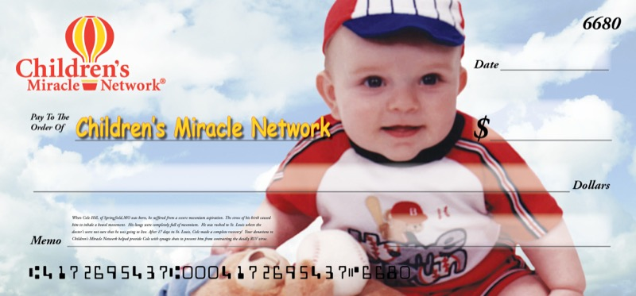

Thirty years of design thinking. A precise hand on the baton.
Let me share with you what that looks like for me…
A full-stack joke database — because the world needed one. Browse, submit, and rate dad jokes, built on PHP & MySQL.

Ten years of CMN telethon display checks — designed, printed, and iterated in-house. From two yellow sheets taped together to something worth keeping.
I've spent a lifetime making things look right, work right, and mean something. Then AI changed what "building software" could mean — and I paid attention.
My background is in graphic design, document management, and project management. That's a career built on systems thinking, visual judgment, and knowing how to get a complex thing across a finish line. I've also been writing code for most of that time — PHP, HTML, CSS, and a handful of other languages — so I know what good software looks like from the inside.
A conductor doesn't play every instrument. They know the score, they hear what's off, and they know exactly how to get what they want from the ensemble.
That's how I build now. I could write this code myself — I have, many times — but AI does it faster and with fewer mistakes than I ever could alone. So I direct: precise instructions, informed by design principles and domain knowledge, with a clear picture of what good looks like. The AI handles execution. I decide if it's right.
The projects on this site are the proof of concept — production-grade software built the way I think more software should be built. Taste and judgment aren't soft skills. They're the whole job.
The idea was simple: a comfortable place on the internet that feels like home. Not a portfolio in the traditional sense. Not a resumé with scroll effects. Something more like a study — a room where work accumulates thoughtfully, where you can tell a real person lives here.
From that room, other rooms branch off. Each project lives in its own space — its own subdomain, its own personality — but the same person is clearly at home in all of them. The Dad-a-Base is the first. More are on the way. The study is the hub. The work is the point.
I wanted to make something that didn't try to look like everyone else's site, didn't hedge, and wasn't afraid to be a little bit itself. Real work, from a real person, built with real care. The method behind it — thirty years of design thinking combined with new tools used deliberately — is what the rest of this section is about.
I'm not hard to find, and I'm not hard to talk to. If something here resonated — a project, an approach, an idea — I'd genuinely like to hear from you.
Whether you're thinking about a collaboration, have a role that might fit, or just want to talk about what AI-directed engineering looks like in practice — reach out. Real conversations are how real things get started.